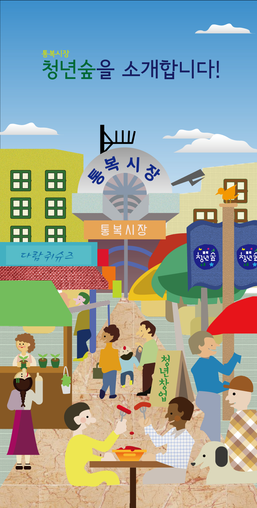

<idoctype html>
<head>
	<meta charset="utf-8">
	<title>통복시장을 소개합니다</title>
	<link href='//spoqa.github.io/spoqa-han-sans/css/SpoqaHanSans-kr.css' 
	      rel='stylesheet' type='text/css'>
</head>
<body>
<hav>
<div>
	<a href="./index.html" target="_self">통복시장을 알아보아요^^</a>
	</div>
	<ul>
		<li><a href="./doc3.html" target="_self">역사</a></li>
		<li><a href="./doc3.html" target="_self">소개</a></li>
		<li><a href="./doc3.html" target="_self">맛집</a></li>
		<li><a href="./doc3.html" target="_self">찾아가는방법</a></li>
	</ul>
	</nav>
	<header>
		<div class="bottom"></div>
		<div class="top">
			<h1>통복시장의 역사</h1>
			<div class="person"></div>
			<p></p>
		</div>
	</header>
	<main>
		<article>
		<h1>통복시장의 소개</h1>
	<figure>
		
		<figcaption>통복시장의 소개</figcaption>
	</figure>
		<p>통복시장의 맛집</p>
		</article>
	</main>
	<aside>
		<p>한 때 번성했으나 쇠락의 길을 걷던 평택 통복시장 주단골목이 ‘청년 숲’이라는 이름으로 다시 태어났다.
26일 평택시에 따르면 통복시장 청년 숲이 지난해 말 중소기업청의 전통시장 청년몰 조성사업에 선정된 지 반년만인 지난 24일 개소식을 갖고 본격적인 영업에 들어갔다.
경기 남부지역 최대의 전통시장인 통복시장이 지리적 이점과 규모의 경제로 번창하던 가운데 주단골목은 60여개 포목점 등이 몰려 성황을 이룬 중심상권이었다.
그러나 소비트렌드의 변화에 따라 상원이 무너져 내리기 시작하더니 최근에는 흉물스런 거리를 넘어 노숙자의 잠자리나 우범지역으로 전락하고 말았다. 
이에 시는 상인회와 머리를 맞대고 지원방안 마련에 나서 중소기업청 전통시장 청년몰 조성사업 공모 선정을 계기로 시비 6억 원을 포함한 
총15억 원의 사업비를 투입해 청년몰 조성사업을 추진했다.
이를 위해 지난해 9월 사업단을 꾸리고 청년상인 선발 및 교육, 기반조성 및 점포 리모델링 등 사업을 숨 가쁘게 추진해 젊은 취향을 반영한 
먹거리점포 13개소, 도·소매, 공예 및 문화관련 점포 6개소와 창업 연습을 위한 체험점포(대박발전소) 1개소 등 총20개 점포를 조성했다.</p>
	</aside>
	<footer>
		<p>햐</p>
		</footer>
	</body>
	<style>
		*{font-family: 'Spoqa Han Sans', '명조';}
		body, h1, ul{margin:0; padding:0;}
		header,nav,main,aside,footer{width:650px; background: #DDD; margin:
			auto; margin-bottom: 1em;}
		header{width:100%; height:400px; background: green; background: 
			url('./img/1차-최종안2.jpg'); background-size: 100%;margin-top: 50px}
		header .top h1{ font-size:3.5em; text-align: center; font-weight:100;
			color:black;z-index:9999;padding-top:2em;}
		header div{position:absolute; width:100%; height:400px;}
		header .top p{color:black; text-align: center}
		header .bottom{opacity: 0.5;background: black;}
		header .top .person{width:70px; height:70px;background:yellow;
			border-radius: 35px;position: relative; margin:auto; margin-top:
				5em; background: url('./img/1차-최종안.jpg1.jpg');background-size:100%;}
		main h1{font-size:2em;}
		
		nav{width:100%; position:fixed; background:#C6FF00; height:50px;
			margin-bottom: 0; top:0px;left:0px;z-index:9999}
		nav a{ text-decoration: none; color: yellow; height:39px; line-height:39px;
			background: none; display: block; padding-top:5px;padding-left:5px;
			padding-right:5px; font-weight:700;float:left;margin-right: 1em;}
		nav a:hover{border-bottom:5px solid #13640b;}
		nav ul{list-style-type: none; float: right;width:650px;}
		nav div a{margin-left:3em;}

		main article figure img{width:100%;}
		
		
	</style>
